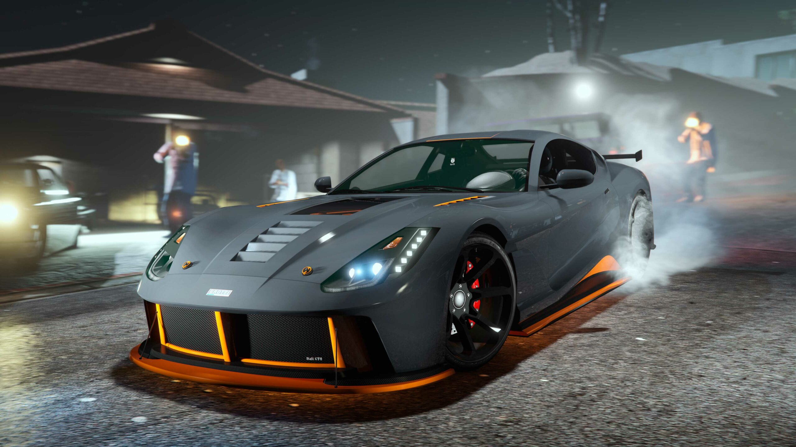
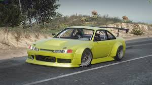
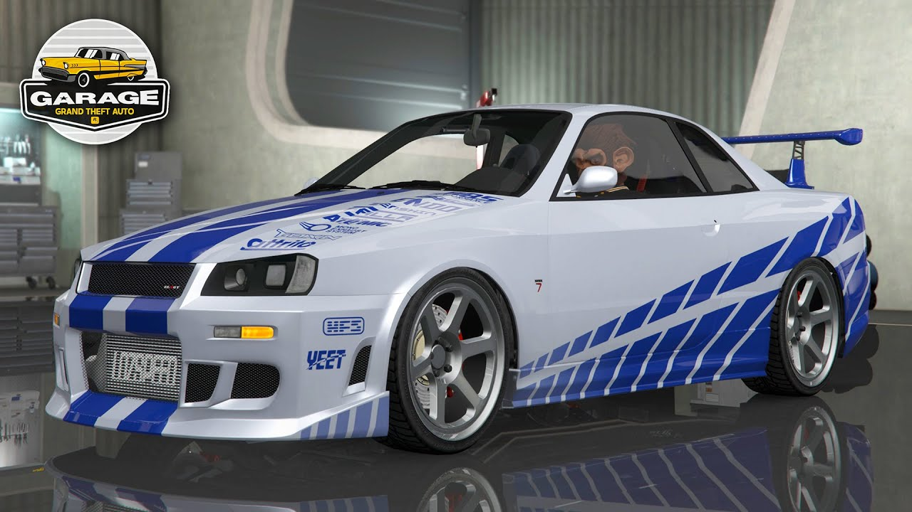
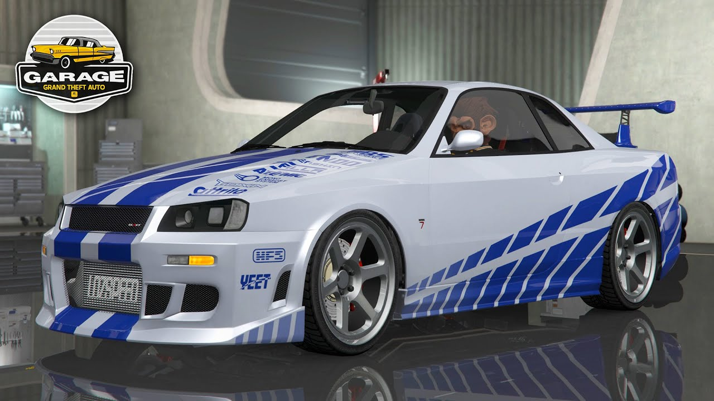

Biografia:
Nome: Rivaldo Jesus
Idade: 29 anos
Ocupação: Organizador de Eventos de Drift e Moto
Status Social: Noivo
Nasceu em: Los Santos
Nome: Rivaldo Jesus
Idade: 29 anos
Ocupação: Organizador de Eventos de Drift e Moto
Status Social: Noivo
Nasceu em: Los Santos
Rivaldo Jesus nasceu em Los Santos porém de pais brasileiros, e cresceu vendo seu pai fazendo drift e apostando em rachas, por isso sempre foi apaixonado por carros. Quando completou 15 anos começou a guardar dinheiro, e com 19 anos ele organizou seu primeiro evento de drift, que foi um sucesso total. Após isso sua paixão por drift só aumentou, e em um dos eventos que ele participava, com 24 anos ele perdeu uma corrida para uma mulher chamada Lucy Kylien, que virou namorada dele após 9 meses de conversa e muito drift, haha! Hoje em dia ele vai se casar com a Lucy e tem uma filha com ela, chamada Jully Jesus.
Carros de Drift:
 Carros de Corrida:
 
